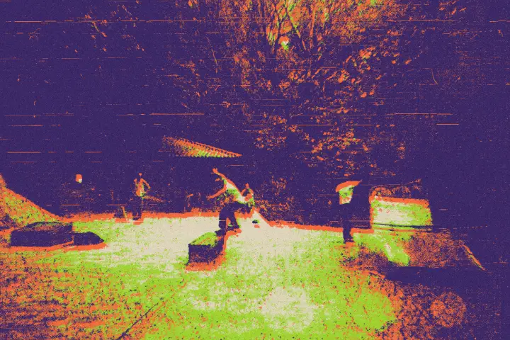
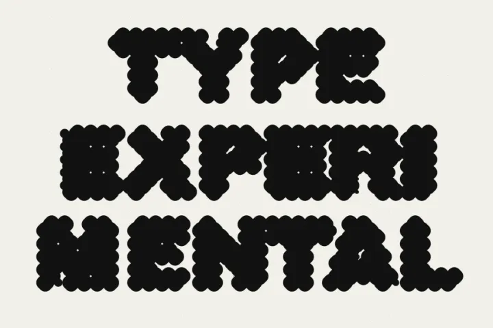
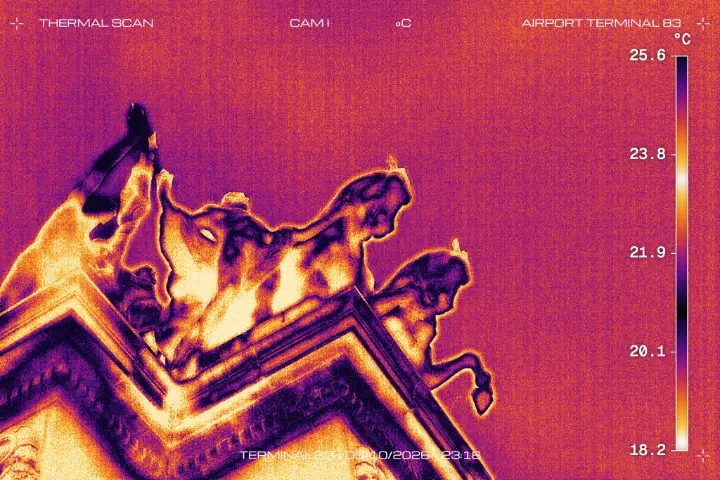

Ferramentas experimentais para imagem e tipografia.
Grátis · No navegador · Sem upload.
Ferramentas03
-
01
Risograph
Duotone e tritone, retícula, desregistro e grão de papel.imagem · canvas 2d

-
02
Typexperimental
Tipografia experimental com blur, halftone e hachura.tipografia · webgl2

-
03
Viewfinder
Câmera térmica, CCTV e camcorder, com OSD e grade multicâmera.foto · webgl2
